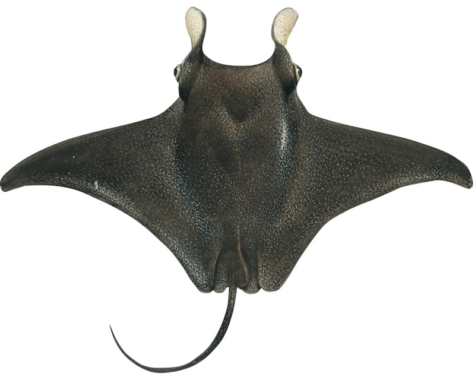

ROBOTIC MODELLING AND DRONE SKIN DESIGN

The Fish from the Ocean
MANTARAY
“The manta ray’s unique anatomy and fluid fin motion make it a perfect inspiration for biomimetic design. Its wide, flexible pectoral fins generate smooth undulating movement, ideal for translating into mechanical articulation in underwater robotics.”

To our project for RMDSD
Also Called as "Mobula birostris"
Inspired by the graceful movement of manta rays, this project merges biomimicry and advanced digital fabrication to create a lifelike robotic prototype. Using 3D scanning, motion capture, and 3D printing, our model simulates natural aquatic motion for educational and exploratory applications.
Bio-Inspired Manta Ray Robotics
Where Nature Meets Engineering Innovation
“Designed for realism and motion, inspired by nature’s most fluid swimmer.”
A 3D-printed robotic manta ray,


Made with Templated Distributed by ThemeWagon.